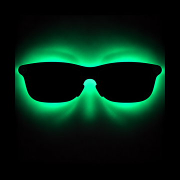
LensSpark
Your Android phone's screen, on your INMO GO3 glasses.
Download for AndroidLensSpark shows what's on your phone on the glasses, live: the newest frame, as often as Bluetooth carries it. The default Text quality (e-book mode) draws bright text on black for fast, sharp reading, at about 6 to 8 frames per second; the detailed qualities run at about 1 to 2. It isn't smooth video, but it's great for anything you'd glance at. Landscape and a dark theme read best.
New in Beta 3
- One button. Share screen connects and shares; Stop sharing leaves the glasses connected.
- Quick Settings tile. Share your screen from any app without leaving it.
- Faster by itself. LensSpark adjusts its sending speed to the link, so the separate RFCOMM mode is gone and you never need to unbind the glasses from INMO Global.
- More reliable connecting on glasses firmware 3.0.407, including with INMO Global connected.
- Image quality slider and an optional status bar on the glasses (frame rate, lag, battery).
See it on the glasses
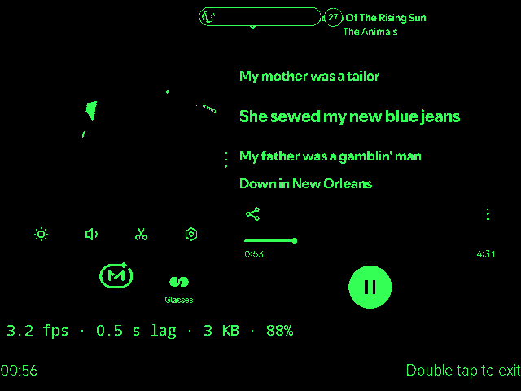
What it's good for
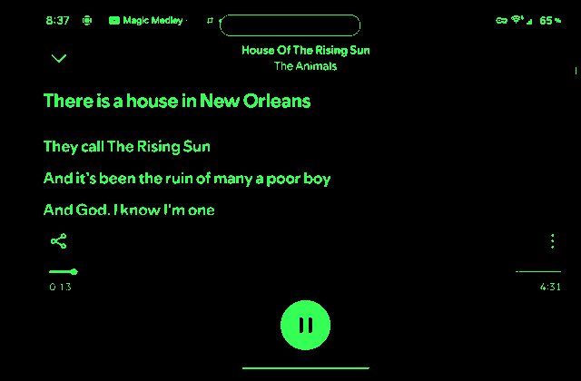
Sing along
Spotify with lyrics on screen: the words follow the song.
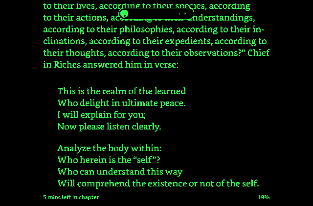
Read a book
Kindle or any e-reader app.
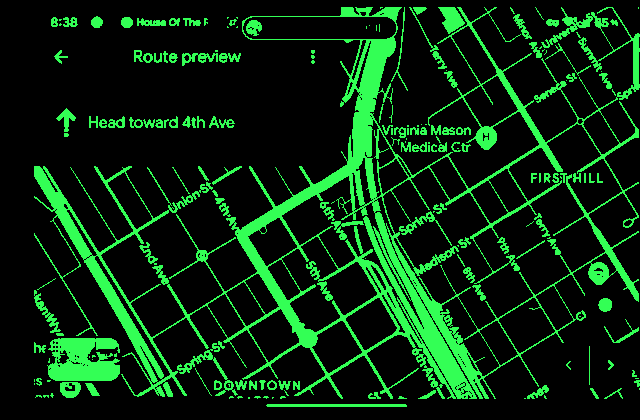
Maps
Google Maps, Waze and other maps. Be safe: don't let the glasses take your eyes off the road, and follow local laws.
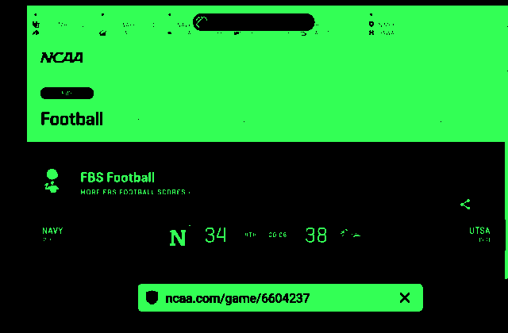
Follow the game
Keep a scoreboard or play-by-play in view.
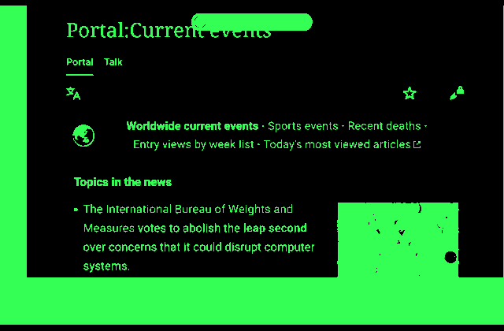
Browse
Web pages, articles, recipes while your hands are busy.
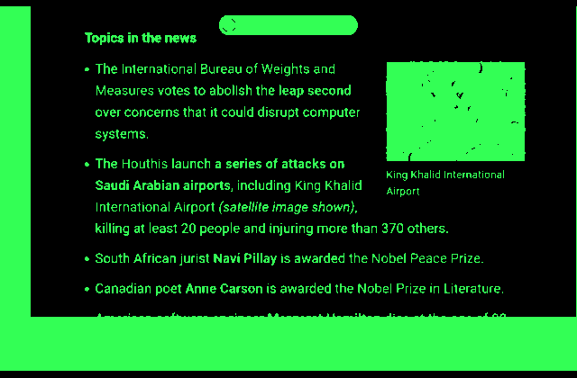
Your feeds
Keep up on social feeds, news and messages.
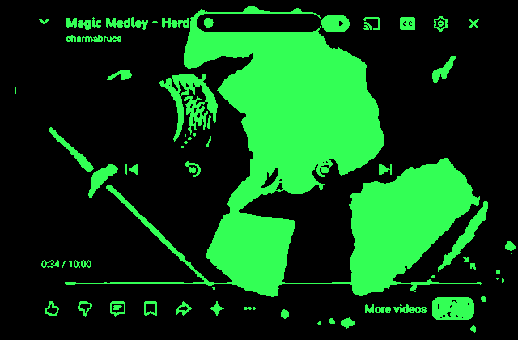
Watch
YouTube shows as bold shapes in Text. Fast shows more detail.
AI on your glasses
Ask on the phone, by voice or keyboard, and read the answer on the glasses. Other AI apps work the same way, because LensSpark shows what's on your screen (apart from secure windows, which Android keeps black).
These views are rendered from phone screenshots with LensSpark's own image code, the way the glasses draw them.
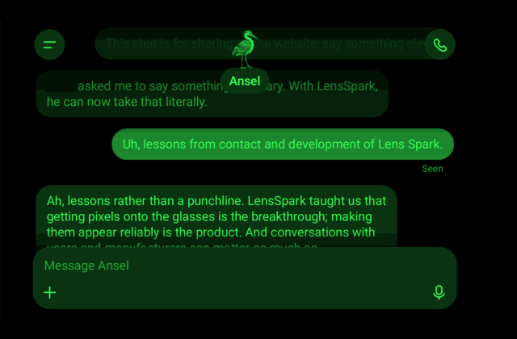
ChatGPT
Read a long answer at eye level; scroll on the phone or with Voice Access. Shown in Balanced quality, which keeps chat bubbles readable.
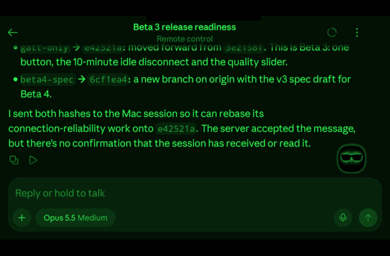
Claude
Read Claude's replies as they come in. Shown in Balanced quality.
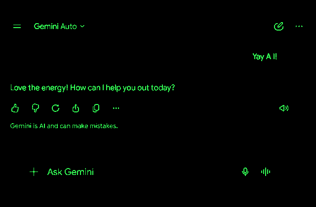
Gemini
Google's assistant, answer in view.
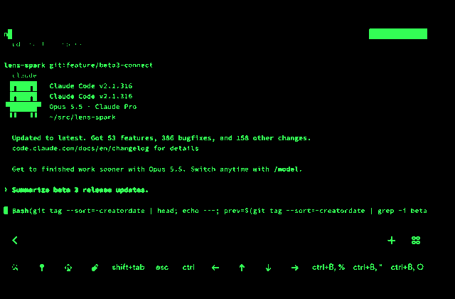
Terminal
Keep a coding agent such as Claude Code in view, in a terminal app on the phone or over SSH to your computer.
Hands-free control
There's no ring control; you control what's shown from the phone. Android's Voice Access works really well once you learn it ("scroll down", "tap Next"), and Bixby or Google Assistant can get you a long way.
Install
- Download the APK on your phone and open it. If Android asks, allow your browser to install unknown apps. Play Protect may warn about an unknown developer: choose Install anyway.
- Open LensSpark and tap Share screen. Allow Nearby devices and notifications when asked. LensSpark finds and pairs the glasses if needed.
- Accept Android's screen-sharing prompt. The glasses show "Ready to share", then your screen.
Stop sharing leaves the glasses connected, so the next Share screen goes straight to Android's prompt. LensSpark disconnects by itself after 10 minutes without sharing, or tap Disconnect in its notification.
Quick Settings tile
Open Quick Settings, choose Edit, and add the LensSpark tile. Then, from any app, tap the tile: LensSpark connects if needed, Android asks to share your screen, and you stay in the app you were using. Tap the tile again to stop sharing; the glasses stay connected.
Works alongside INMO Global
Keep INMO Global installed, bound and running if you like; LensSpark doesn't need it. LensSpark never binds or unbinds the glasses and never removes the phone's Bluetooth pairing. Disconnecting only closes LensSpark's own connection (the glasses show "Not connected").
Used RFCOMM in Beta 1 or 2?
RFCOMM needed the glasses unbound from INMO Global, and Beta 3 can't unbind them for you. Before updating, tap Unbind in your current LensSpark, then reconnect the glasses in INMO Global if you use it:
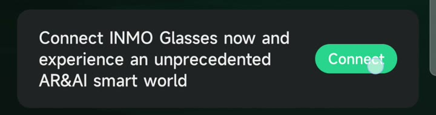
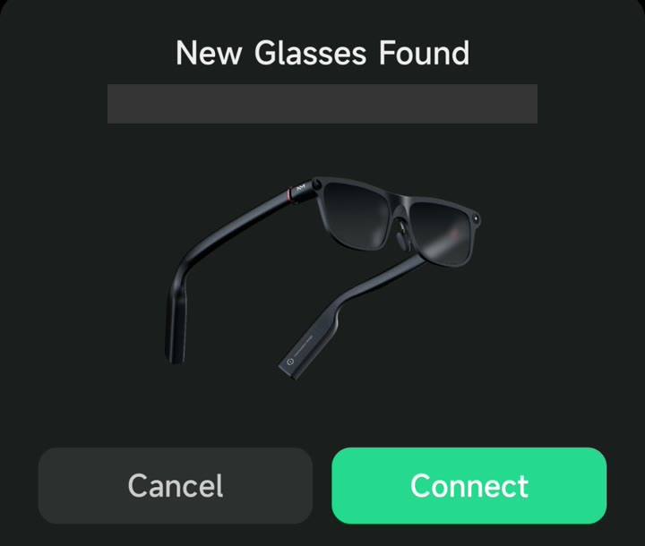
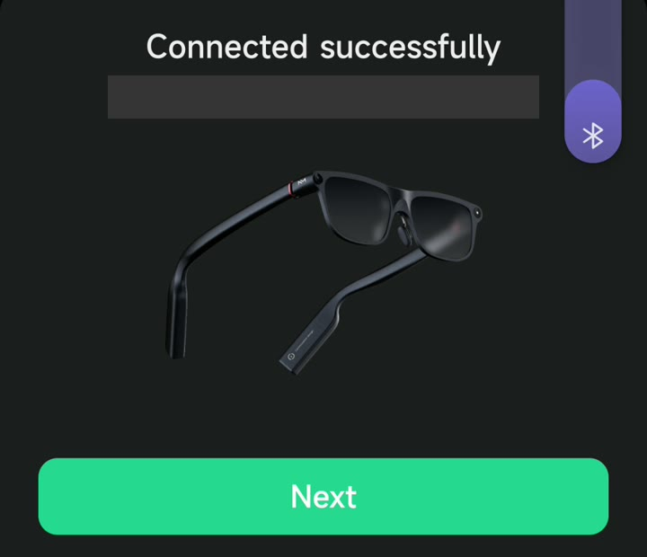
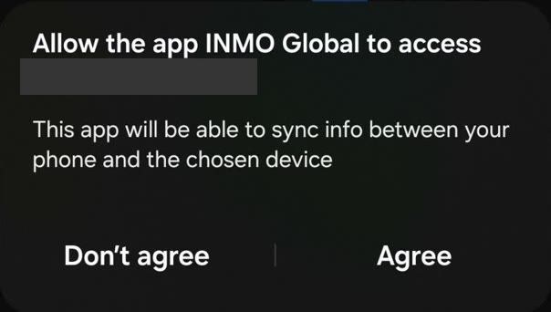
If LensSpark said it couldn't remove the pairing, remove the glasses in Android's Bluetooth settings before step 1.
Can't connect?
- The glasses show a language or setup screen: finish setup on the glasses (choose a language), then tap Share screen.
- "Android can't see the glasses' image service": turn the phone's Bluetooth off and on, then tap Share screen.
- Still stuck: turn the glasses off and on, then try Share screen two or three times. If that fails, remove the glasses in Android's Bluetooth settings and tap Share screen: LensSpark finds and pairs them again.
- LensSpark is tested on glasses firmware 3.0.407; if yours is older, updating may help.
Good to know
- Locking the phone stops sharing. Android ends screen capture on lock. LensSpark stays connected; unlock and tap Share screen.
- The frame rate follows the link: it drops while the glasses play audio, as you walk away from the phone, and with other Bluetooth devices nearby, then recovers by itself.
- Text (the default) is the fastest and best for reading. For photos and video, Fast, Balanced and High show grays; High is the slowest.
- While sharing, the glasses' display won't go to sleep by itself. Press the glasses' power button to sleep it; your screen is back as soon as you wake them.
- While you share, LensSpark has the glasses' display: glasses apps and INMO Global navigation aren't usable at the same time. Stop sharing to use them.
- Secure windows (banking apps, passwords) show as black, as Android does.
- If the connection drops, LensSpark reconnects by itself, up to 5 tries (within about 2 minutes). If that fails, the last image may stay on the glasses.
- Battery: in our tests a GO3 battery lasted about 1.5 to 2.5 hours. The battery swaps, but doing so reboots the glasses — a spare keeps you going after the reboot, reconnecting, and tapping Share screen again.
Privacy
LensSpark has no internet permission, no analytics and no accounts, and saves nothing it captures. It sends your screen from your phone to your glasses over Bluetooth and nowhere else. The apps you mirror, such as AI assistants, keep their own accounts and privacy practices. LensSpark relies on Bluetooth's own pairing encryption and adds none of its own.